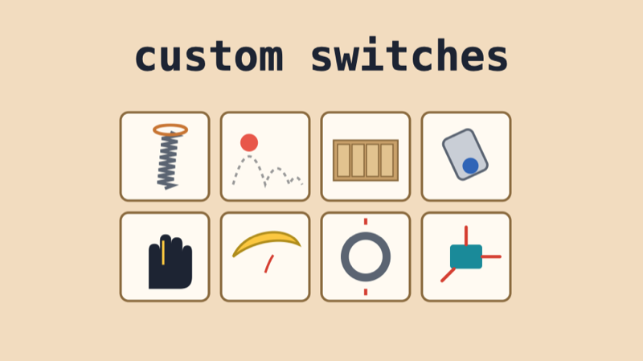

Custom Switches & Interfaces

Summary
A switch is just two pieces of metal that touch. A sensor is just something that changes when the world changes. Artists, musicians and designers have built switches and sensors into gloves, cardboard, doorknobs and bowls of water, and some of the most memorable interfaces come from a simple idea used in an unexpected place.
Look at each example and ask: what is the switch or sensor, what does the person do to it, and what happens? Then think about your own interface for the midterm.
Switches in Unexpected Places
Variable Resistors and Motion
Cardboard Mechanisms
Google, Google Cardboard
(2014)
A virtual reality viewer folded from cardboard, with a phone
inside as the screen. The first version had no electronics at
all for its button: just two magnets.
The switch: one magnet glued inside the cardboard and a ring magnet on the outside. Sliding the outer magnet changes the magnetic field, and the phone’s built-in compass senses the change as a button press. How the magnet button works (K&J Magnetics)
Build Your Own
Every example above started with something simple: two contacts that touch, a sensor that bends, a magnet that moves. Try these, then make one that’s yours.

Doorstop Spring Switch

Bouncing Ball Sensor

DIY Pressure Sensor (Velostat)

Midterm: Creative Interfaces
Questions for Your Interface
- What’s the simplest switch that could do what you want: two contacts, a ball, a spring, a magnet?
- Does it need to be on/off (a switch) or how much (a variable resistor or an accelerometer)?
- What material does the person touch: cardboard, fabric, water, their own body?
- What movement triggers it: a press, a flick, a tilt, a squeeze, a bounce, a breath?